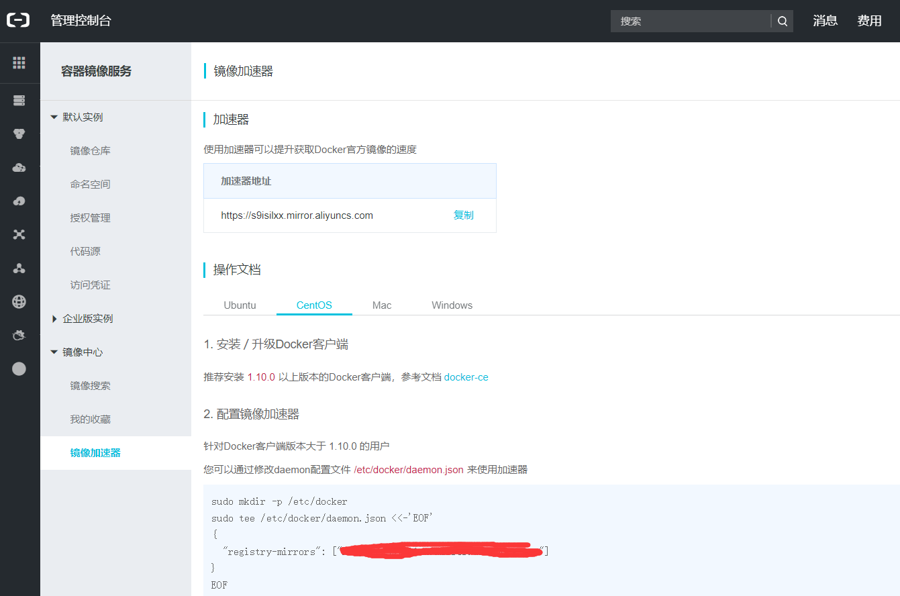

docker
在线安装
docker是容器的基础服务，而shipyard是查看容器的界面服务（也是运行在docker上的容器服务）
卸载旧版本
yum remove -y docker docker-common docker-selinux docker-engine
yum install -y wget
systemctl stop firewalld
systemctl disable firewalld
获取官方源
wget -P /etc/yum.repos.d/ https://download.docker.com/linux/centos/docker-ce.repo
用下面的命令可以查看可以安装的版本
yum list docker-ce --showduplicates | sort -r
其中有3列信息，第1列：软件包名称、第2列：版本字符串、第3列：仓库名称
比方想安装docker ce的版本18.03.0
yum install -y docker-ce-<版本号>
yum install -y docker-ce-18.03.0.ce-1.el7.centos
启动、开机启动
systemctl start docker
systemctl enable docker
开放2375端口
firewall-cmd --zone=public --permanent --add-port=2375/tcp
firewall-cmd --reload
试验安装是否成功、查看版本
docker run hello-world
docker version
设置镜像加速器
墙的缘故，访问docker hub不够稳定，故需要设置镜像加速器来解决这个问题。 这里使用的是阿里云的镜像加速器。 登录阿里云后，访问https://cr.console.aliyun.com/#/accelerator
（registry-mirrors的值必须带https:// （阿里云的教程中只有域名），否则会出现docker重启报错的情况。）
离线安装
建立docker用户组
# 建立docker组
sudo groupadd docker
# 将当前用户加入docker组
sudo usermod -aG docker $USER
待续
卸载
yum list installed | grep docker
删除安装的软件包
[root@sungeek ~]# yum -y remove docker-common.x86_64
删除镜像/容器等
[root@sungeek ~]# rm -rf /var/lib/docker/
输入docker或docker --version验证是否卸载
导入加载进来觉得不合适可以使用 docker rm 容器ID 、 docker rmi 镜像ID 来删掉
移除所有的容器和镜像
docker kill $(docker ps -q) ; docker rm $(docker ps -a -q) ; docker rmi $(docker images -q -a)
获取应用栈各节点所需镜像
docker pull ubuntu
docker pull django
docker pull haproxy
docker pull redis
应用栈各节点连接信息如下：
启动redis-master节点
两个redis-slave节点启动时要连接到master
两个APP节点启动要连接到master
Haproxy节点启动要连接到两个APP节点
启动顺序：redis-master——>redis-slave——>APP——>haproxy
为了外网可以访问应用栈，haproxy需要暴露端口给主机
节点启动
#启动redis容器
docker run -it --name redis-master redis /bin/bash
docker run -it --name redis-slave1 --link redis-master:master redis /bin/bash
docker run -it --name redis-slave2 --link redis-master:master redis /bin/bash
#启动Django容器
docker run -it --name APP1 --link redis-master:db -v ~/Projects/Django/App1:/usr/src/app django /bin/bash
docker run -it --name APP2 --link redis-master:db -v ~/Projects/Django/App2:/usr/src/app django /bin/bash
#启动HAProxy容器
docker run -it --name HAProxy --link APP1:APP1 --link APP2:APP2 -p 6301:6301 -v ~/Projects/HAProxy:/tmp haproxy /bin/bash
节点配置
实现特定的功能和通讯协作
关闭redis:redis-cli -p 端口号 shutdown
- Redis-master
[root@lqy-ali home]redis-server -v
[root@lqy-ali home]docker inspect --format "{{.Mounts}}" containerId
[root@lqy-ali home]# cd /var/lib/docker/volumes/cb4866ddee3b7391dd492f186c30b20768b33e613a5267bc9a9ed6b174d64e8e/_data
[root@lqy-ali cb4866ddee3b7391dd492f186c30b20768b33e613a5267bc9a9ed6b174d64e8e]# cp /home/redis.conf redis.conf
[root@lqy-ali cb4866ddee3b7391dd492f186c30b20768b33e613a5267bc9a9ed6b174d64e8e]# vi redis.conf
需要修改2个参数
bind 0.0.0.0
daemonize yes
pidfile /var/run/redis.pid
主机创建完成启动配置文件后，切换到volume目录中，复制启动文件至redis执行目录，启动redis服务器
root@c693354bdeff:/data# ls
redis.conf
root@c693354bdeff:/data# cp redis.conf /usr/local/bin/
root@c693354bdeff:/data# cd /usr/local/bin/
root@c693354bdeff:/usr/local/bin# ls
docker-entrypoint.sh gosu redis-benchmark redis-check-aof redis-check-rdb redis-cli redis-sentinel redis-server redis.conf
root@c693354bdeff:/usr/local/bin# redis-server redis.conf
13:C 18 May 2019 03:13:53.977 # oO0OoO0OoO0Oo Redis is starting oO0OoO0OoO0Oo
13:C 18 May 2019 03:13:53.977 # Redis version=5.0.5, bits=64, commit=00000000, modified=0, pid=13, just started
13:C 18 May 2019 03:13:53.977 # Configuration loaded
Redis-Slave
其余都一样，除了修改启动配置文件
daemonize yes pidfile /var/run/redis.pid slaveof master 6379slaveof使用格式为slaveof
，用--link参数设置的连接名来代替真实IP。 通过连接名互连通信，容器会自动读取它host信息，将连接名转换为实际IP地址
Redis数据库节点测试
master上先存一个值，然后去另外两台查询是否有值
APP容器配置
为了访问数据库，需要在容器中安装Python语言的Redis支持包
pip install redis #测试安装 root@8089581e353e:/# python Python 3.4.5 (default, Dec 14 2016, 18:54:20) [GCC 4.9.2] on linux Type "help", "copyright", "credits" or "license" for more information. >>> import redis >>> print(redis.__file__) /usr/local/lib/python3.4/site-packages/redis/__init__.py在容器的voleme目录下/usr/src/app/下开始创建app
#容器内 root@8089581e353e:/# cd /usr/src/app/ root@8089581e353e:/usr/src/app# mkdir dockerweb root@8089581e353e:/usr/src/app# cd dockerweb/ root@8089581e353e:/usr/src/app/dockerweb# django-admin.py startproject redisweb root@8089581e353e:/usr/src/app/dockerweb# ls redisweb root@8089581e353e:/usr/src/app/dockerweb# cd redisweb/ root@8089581e353e:/usr/src/app/dockerweb/redisweb# ls manage.py redisweb root@8089581e353e:/usr/src/app/dockerweb/redisweb# python manage.py startapp helloworld root@8089581e353e:/usr/src/app/dockerweb/redisweb# ls helloworld manage.py redisweb切换成主机的volume目录来修改配置APP
[root@lqy-ali App1]# cd dockerweb/redisweb/helloworld/ [root@lqy-ali helloworld]# ls admin.py apps.py __init__.py migrations models.py tests.py views.py [root@lqy-ali helloworld]# vi views.pyviews.py文件如下：
from django.shortcuts import render from django.http import HttpResponse import redis def hello(request): str=redis.__file__ str+="<br>" r=redis.Redis(host='db',port=6379,db=0) info=r.info() str+=("Set Hi <br>") r.set('Hi','HelloWorld-APP1') str+=("Get Hi:%s <br>" % r.get('Hi')) str+=("Redis Info:<br>") str+=("Key: Info Value") for key in info: str+=("%s:%s <br>" % (key,info[key])) return HttpResponse(str)连接Redis数据库时，使用--link参数创建db连接来代替具体的IP地址
修改redisweb项目的配置文件setting.py，添加新建的helloworld应用
ALLOWED_HOSTS = ['121.196.195.191'] INSTALLED_APPS = [ 'django.contrib.admin', 'django.contrib.auth', 'django.contrib.contenttypes', 'django.contrib.sessions', 'django.contrib.messages', 'django.contrib.staticfiles', 'helloworld', ]修改redisweb项目的URL模式文件urls.py,它将设置访问应用的URL模式，并为URL模式调用视图函数之间的映射表。
vi urls.py在urls.py文件中，引入helloworld应用的hello视图，并为hello视图添加一个urlpatterns变量
from django.conf.urls import url from django.contrib import admin from helloworld.views import hello urlpatterns = [ url(r'^admin/', admin.site.urls), url(r'^helloworld$',hello), ]进入容器，在目录/usr/src/app/dockerweb/redisweb下完成项目生成
root@8089581e353e:/usr/src/app/dockerweb/redisweb# python manage.py makemigrations No changes detected root@8089581e353e:/usr/src/app/dockerweb/redisweb# python manage.py migrate Operations to perform: Apply all migrations: admin, auth, contenttypes, sessions Running migrations: Applying contenttypes.0001_initial... OK Applying auth.0001_initial... OK Applying admin.0001_initial... OK Applying admin.0002_logentry_remove_auto_add... OK Applying contenttypes.0002_remove_content_type_name... OK Applying auth.0002_alter_permission_name_max_length... OK Applying auth.0003_alter_user_email_max_length... OK Applying auth.0004_alter_user_username_opts... OK Applying auth.0005_alter_user_last_login_null... OK Applying auth.0006_require_contenttypes_0002... OK Applying auth.0007_alter_validators_add_error_messages... OK Applying auth.0008_alter_user_username_max_length... OK Applying sessions.0001_initial... OK root@8089581e353e:/usr/src/app/dockerweb/redisweb# python manage.py syncdb Unknown command: 'syncdb' Type 'manage.py help' for usage. #为数据库中每个应用建立一个数据库表,在Django 1.9及未来的版本种使用migrate代替syscdb root@8089581e353e:/usr/src/app/dockerweb/redisweb# python manage.py migrate Operations to perform: Apply all migrations: admin, auth, contenttypes, sessions Running migrations: No migrations to apply.启动指定ip和端口
root@8089581e353e:/usr/src/app/dockerweb/redisweb# python manage.py runserver 0.0.0.0:8001 Performing system checks... System check identified no issues (0 silenced). May 18, 2019 - 04:34:45 Django version 1.10.4, using settings 'redisweb.settings' Starting development server at http://0.0.0.0:8001/ Quit the server with CONTROL-C.HAProxy容器节点配置
HAProxy启动配置文件复制进容器
[root@lqy-ali redisweb]# cd ~/Projects/HAProxy/ [root@lqy-ali HAProxy]# ls [root@lqy-ali HAProxy]# vi haproxy.cfgglobal log 127.0.0.1 local0 #日志输出配置，所有日志都记录在本机，通过local0输出 maxconn 4096 #最大连接数 chroot /usr/local/sbin #改变当前工作目录 daemon #以后台形式运行HAProxy nbproc 4 #启动4个HAProxy实例 pidfile /usr/local/sbin/haproxy.pid #pid文件位置 defaults log 127.0.0.1 local3 #日志文件的输出定向 mode http #{tcp|http|health}设定启动实例的协议类型 option dontlognull #保证HAProcy不记录上级负载均衡发送过来的用于检测状态没有数据的心跳包 option redispatch #当serverId对应的服务器挂掉后，强制定向到其他健康的服务器 retries 2 #重试两次连接失败就认为服务器不可用，主要通过后面的check检查 maxconn 2000 #最大连接数 balance roundrobin #balance有两个可用选项：roundrobin和source,其中,roundrobin表示轮询，而source表示HAProxy不采用轮询的策略，而是把来自某个IP的请求转发给一个固定IP的后端 timeout connect 5000ms #连接超时时间 timeout client 50000ms #客户端连接超时时间 timeout server 50000ms #服务器端连接超时时间 listen redis_proxy 0.0.0.0:6301 stats enable stats uri /haproxy-stats server APP1 APP1:8001 check inter 2000 rise 2 fall 5 #你得均衡节点 server APP2 APP2:8002 check inter 2000 rise 2 fall 5进入容器的volume目录/tmp下，将HAProxy启动配置文件复制到HAProxy的工作目录中
root@bbf0225f40d2:/# cd /tmp/ root@bbf0225f40d2:/tmp# cp haproxy.cfg /usr/local/sbin/ root@bbf0225f40d2:/tmp# cd /usr/local/sbin/ root@bbf0225f40d2:/usr/local/sbin# ls haproxy haproxy.cfg启动HAProxy代理
root@bbf0225f40d2:cd /tmp root@bbf0225f40d2:/tmp# cp haproxy.cfg /usr/local/sbin/ root@bbf0225f40d2:/tmp# cd /usr/local/sbin/ root@bbf0225f40d2:/usr/local/sbin# haproxy -f haproxy.cfg如果修改了配置文件的内容，需要先结束所有的HAProxy进程，并重启代理，killall命令来结束进程
yum install psmisc killall haproxy